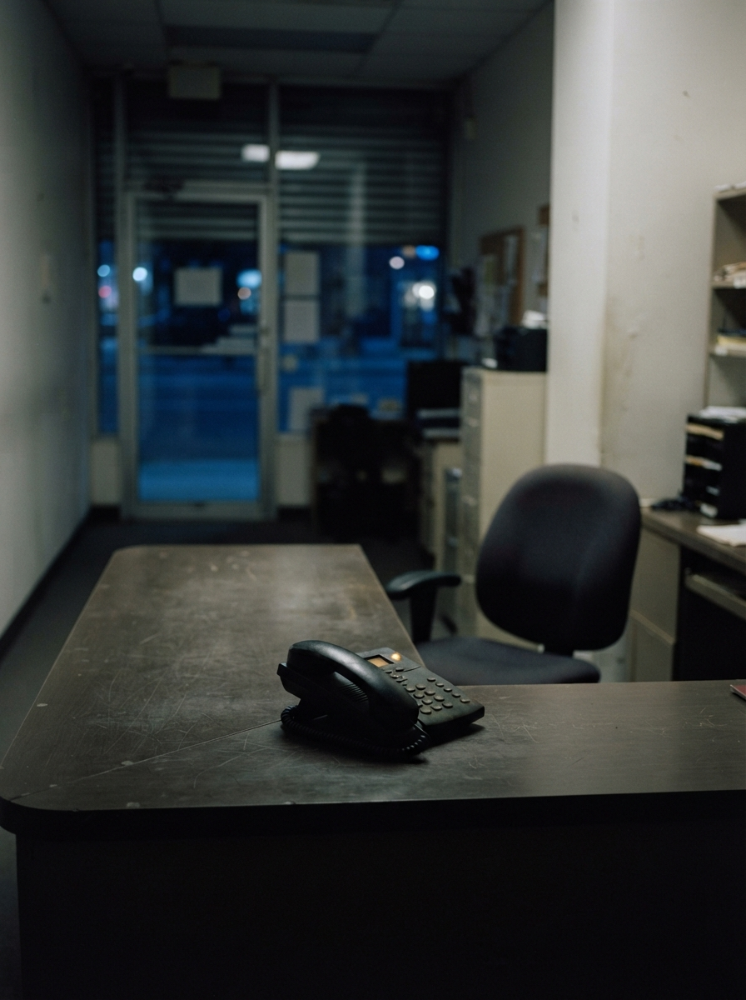

Cierre del número
la
silla
no espera
Lo que dejó el número
04
El teléfono queda en el buzón. La silla se queda vacía.
Tema · Raintree
04
7 de cada 10 no dejan recado.
Dato · cita del número
08
El que más sabe no es el que contesta.
Tablero · lo que leo yo
Si el teléfono se come la silla, el resto del número ya te dijo
por dónde se decide el lunes.
Si quieres te muestro cómo se ve eso en tu operación. Media hora y listo.
Media hora · agenda directa
https://cal.com/wavys-call/30min

Recepción a las 8 de la noche.
El teléfono con la luz prendida, la silla ya vacía.
El teléfono con la luz prendida, la silla ya vacía.
Nos leemos el viernes que viene.
Phil · agosto 2026
Radar · el semanal de Wavys Technologies
Lima · wavys-technologies.com
Lima · wavys-technologies.com
Contratapa
09